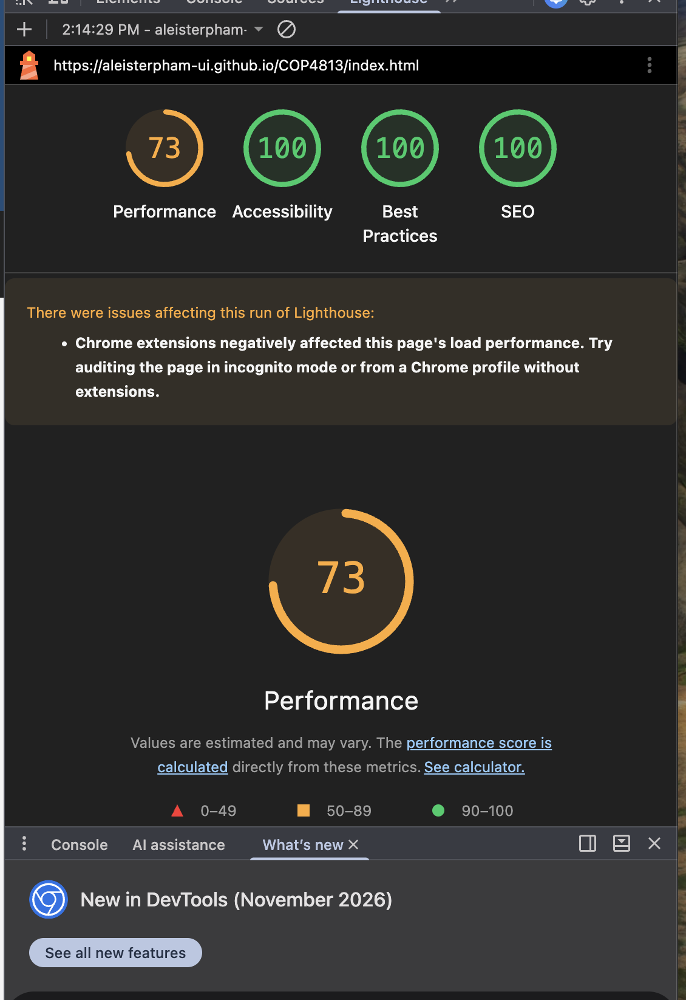
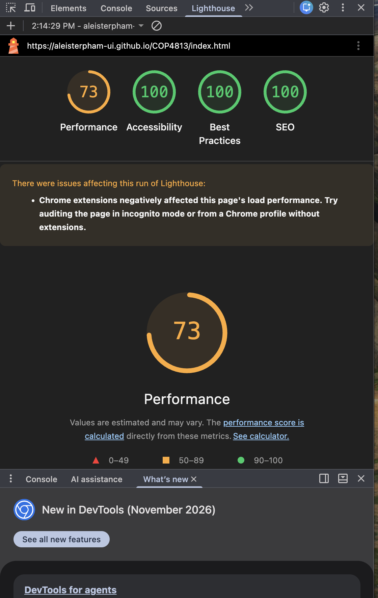
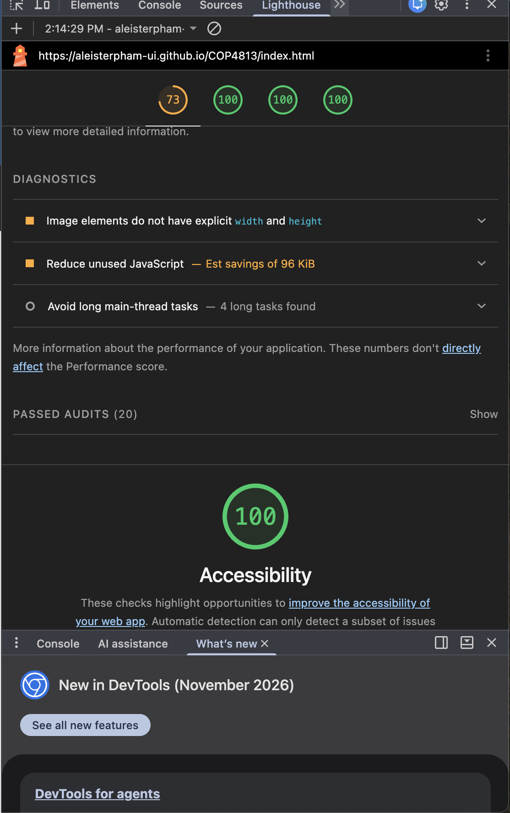
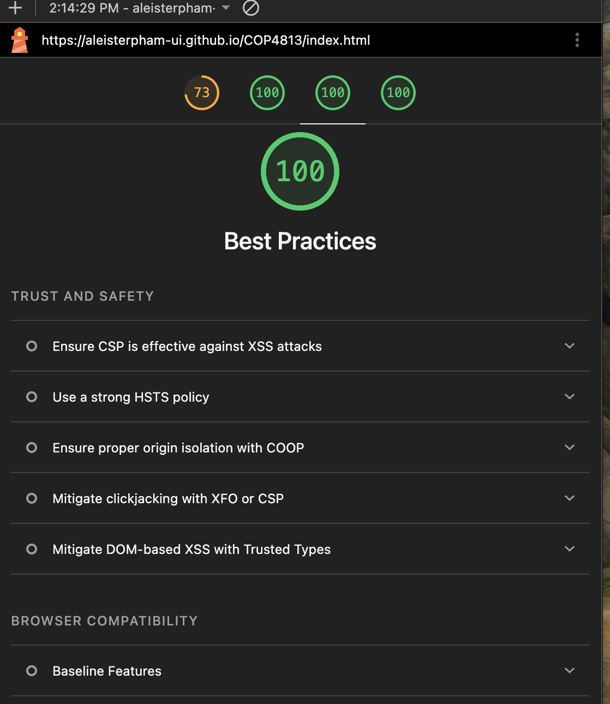
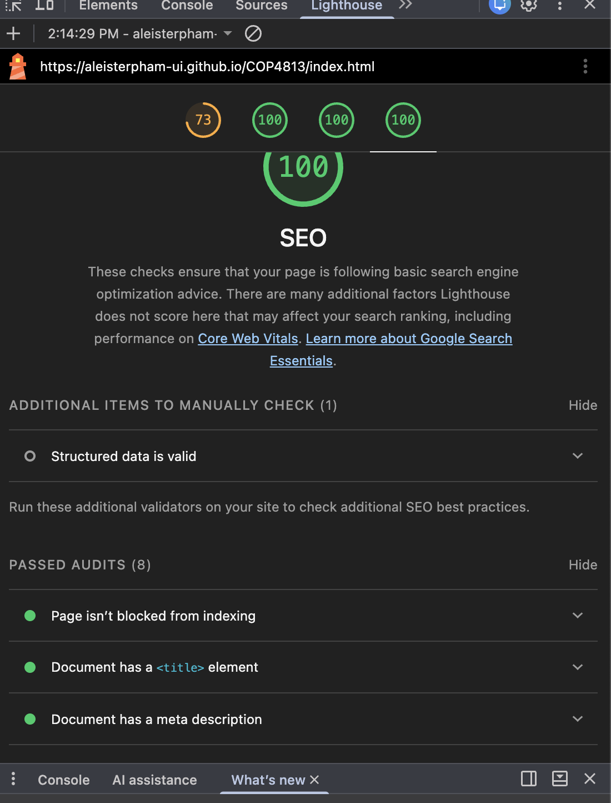

Lighthouse Mobile Analysis
I tested the home page of my website using Google Chrome Lighthouse in Navigation mode with the Mobile device setting. The audit evaluated Performance, Accessibility, Best Practices, and SEO.
Overall Scores
- Performance: 73
- Accessibility: 100
- Best Practices: 100
- SEO: 100

Performance Analysis
The Performance score was 73. Lighthouse reported that the page loaded its first content quickly, but some performance issues reduced the overall score. The Largest Contentful Paint was 4.6 seconds and the Speed Index was 33.2 seconds.
Lighthouse recommended improving image delivery, using more efficient cache lifetimes, reducing unused JavaScript, and adding explicit width and height values to images. The report also identified render-blocking requests and several long main-thread tasks.

Accessibility Analysis
The Accessibility score was 100. The page passed checks for alternative text on images, sufficient color contrast, valid ARIA attributes, descriptive links, appropriate heading order, and properly sized touch targets.

Best Practices Analysis
The Best Practices score was 100. The website uses HTTPS, avoids deprecated APIs and unnecessary permission requests, displays images with the correct aspect ratio, uses a valid HTML doctype and character set, and produced no browser console errors during the Lighthouse audit.

SEO Analysis
The SEO score was 100. Lighthouse confirmed that the page can be indexed, includes a title and meta description, returns a successful HTTP status code, uses descriptive and crawlable links, and provides alternative text for images.

Conclusion
The Lighthouse audit shows that the website performs very well in Accessibility, Best Practices, and SEO. The main area for improvement is Performance, especially image delivery and page loading speed. The website remains usable on mobile devices, and the audit provides clear areas that could be improved in future development.